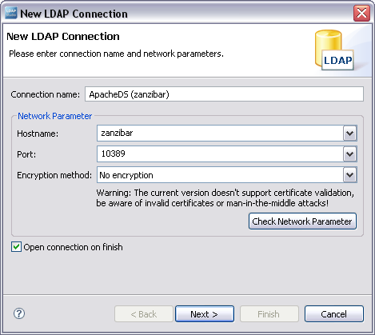
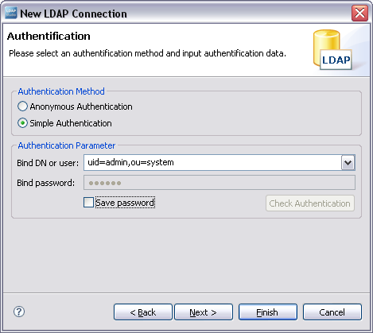
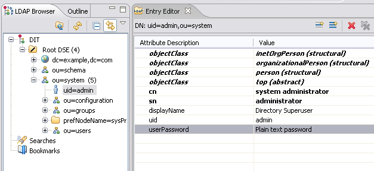
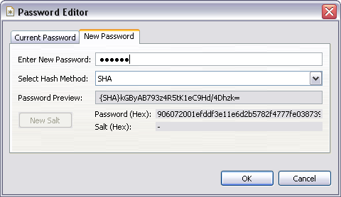
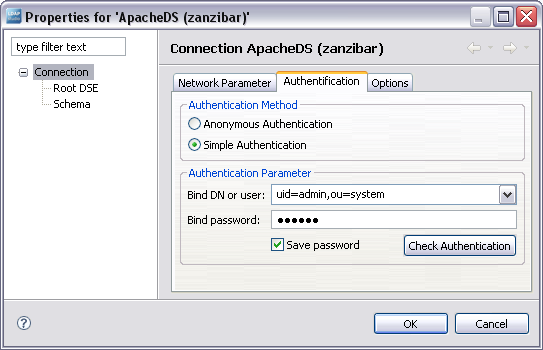

ApacheDS 2.0
Downloads
Documentation
- Basic User Guide
- Advanced User Guide
- Developer Guide
- Kerberos User Guide
- Configuration
- JavaDocs
- Cross-Reference
Support
Community
About Apache
1.4.2 - Changing the admin password
This section describes the steps necessary to change the administrator password. Follow the instructions provided here step by step.
Step one: Changing the value in the system partition
While the server is up and running, change the value of the userPassword attribute of the admin (uid=admin,ou=system) via LDAP. There are several ways to accomplish this task. In the following, we use the Eclipse based Apache Directory Studio.
A new LDAP connection with this tool is created via “New Connection …” from the Connections view. Enter your connection data in the first step …

… and in the next step, enter the admin DN uid=admin,ou=system and the current password (default is “secret”). Saving the password is not necessary, we will change it anyway.

Click Finish to establish the connection.
Afterwards, modify the value of the userPassword attribute of the entry uid=admin,ou=system. Navigate to the entry in the DIT (LDAP Browser view), and double click the attribute in the Entry Editor view:

The Password Editor dialog shows up; enter the new password. You can optionally select a hash algorithm like SHA. In this case, the password will be stored one-way encrypted in the attribute value – not a bad idea.

Pressing OK stores the new value. Close the connection and shutdown the server.
Step two: Verification
Verify that you can login as admin with the new password. With Apache Directory Studio, you can change the properties of the existing connection profile via a right click in the Connections view and a selection of the Properties menu item. The following dialog appears:

Enter the new password and press OK. Establishing a connection should now work.
Resources
- Apache Directory Studio: The tool used in steps 1 and 2